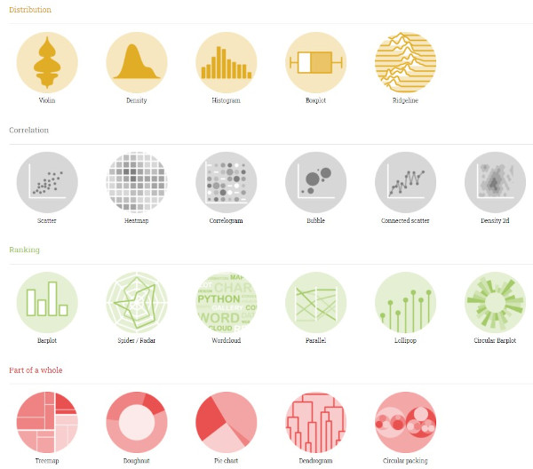
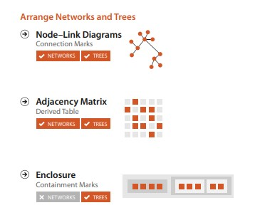
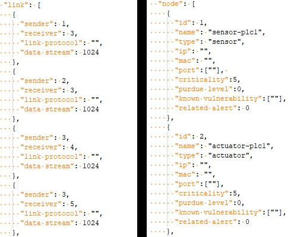

Chart types
10a: Hierarchical / network data
Recap: How to design viz idioms

Recap: Data Types
- Tabular data
- Networks
- Geographic / spatial
- Fields
- Hierarchical
D3 Graph Gallery
D3 Graph Gallery, by Yan Holtz
Hierarchical data
A classic example is flare.json, which is JSON with a tree-like structure.
Flare.json is commonly seen in D3 examples. This dataset is based on an ancestor of D3.
Each leaf node represents a source file while each internal node represents a folder. The leaf node’s value is the size of the file in bytes.
Treevis.net A Visual Bibliography of Tree Visualization 2.0
How to visualize hierarchical data: zoomable sunbursts, packed circles and treemaps, Flourish Studio
Idiom: Treemap
What: Data |
Tree |
How: Encoding |
Area marks and containment, with rectilinear layout. |
Why: Task |
Query attributes at leaf nodes. |
| Scale | Leaf nodes: thousands. Links: thousands. |
Treemap, ObservableHQ, flare.json
Treemap Art, Ben Schneiderman
How have Singaporean homes changed over the decades?, ST (Proportional map)
Idiom: Sunburst / Icicle
What: Data |
Tree |
How: Encoding |
Marks laid out in a circular or rectangular fashion. |
Why: Task |
Query attributes at leaf nodes. |
| Scale | Leaf nodes: thousands. Links: thousands. |
Sunburst, ObservableHQ, flare.json
Icicle, ObservableHQ, flare.json
ENERGYA Global Breakdown of Greenhouse Gas Emissions by Sector, World in Data
Idiom: Packed circles
What: Data |
Tree |
How: Encoding |
Area marks and containment, with circular layout. |
Why: Task |
Query attributes at leaf nodes. |
| Scale | Leaf nodes: thousands. Links: thousands. |
D3 Graph Gallery - Packed Circles
Zoomable packed circles, ObservableHQ, flare.json
Circle Packing UI, V/R
Example: Sexual violence in Singapore: a crisis, Kontinentalist
Idiom: Dendogram
What: Data |
Tree |
How: Encoding |
Tree-like structure. |
Why: Task |
Query attributes at leaf nodes. |
| Scale | Leaf nodes: thousands. Links: thousands. |
Cluster Dendogram, ObservableHQ, flare.json
Paths to the White House, NY Times
Network
Network data
Recap: A collection of nodes and links.
Idiom: Force directed layout
What: Data |
Network. Derived: cluster hierarchy atop original network |
How: Encoding |
Point marks for nodes, connection marks for links. |
Why: Task |
Explore topology, locate paths and clusters. |
| Scale | Nodes: Hundreds. Links: Hundreds. Node/link density: L < 4N |
D3 Graph Gallery - Force diagram
A day in the life of americans, Nathan Yau, Flowing Data
Idiom: Adjacency Matrix
What: Data |
Network. Derived data — table: network values as keys, link status between two nodes as values. |
How: Encoding |
Area marks in 2D matrix alignment. |
Why: Task |
Small area marks allow for high information density to inspect network (clustering, frequency) |
| Scale | Nodes: 1,000. Links: a million |
Compare: Adjacency matrix vs force diagram, Mike Bostock, Les Miserables dataset.
Idiom: Chord Diagram
What: Data |
Network, where you want to show many-to-many relationships from nodes to other nodes. |
How: Encoding |
Radial arcs between nodes to show relationships. |
Why: Task |
See holistic overview of relationships. |
| Scale | Not so many nodes that the chart gets too messy. |
D3 Graph Gallery - Chord Diagram
Chord Diagram, ObservableHQ
Visualizing Ukraine’s Top Trading Partners and Products, Harrison Schell
Idiom: Sankey
What: Data |
Network, where you want to show paths (and especially a quantitative value in the links) from one class of input nodes to a class of output nodes. |
How: Encoding |
Point marks for nodes, scaled connection bands for links. |
Why: Task |
See holistic overview of paths from the inputs to the outputs. |
| Scale | Not so many nodes that the chart gets too messy. |
Sankey, ObservableHQ
Africa's Rising Cities, Washington Post
Flying during Covid-19: When will Singapore’s air travel take off again?, Straits Times
Idiom: Arc Diagram
What: Data |
Network. Useful if there is an ordering of nodes that makes the layout tidy. |
How: Encoding |
Point marks for nodes, arcs for links. |
Why: Task |
Explore topology, locate paths and clusters. |
| Scale | Nodes: Hundreds. Links: Hundreds. Node/link density: L < 4N |
D3 Graph Gallery - Arc Diagram
Arc Diagram, ObservableHQ
Idiom: Edge Bundling
What: Data |
Network of adjacency relationships organized in a hierarchy. |
How: Encoding |
Point marks for nodes, arcs for links. |
Why: Task |
Reduces visual clutter and also visualizes implicit adjacency edges between parent nodes. |
| Scale | Leaf nodes: thousands. Links: thousands. |
Edge Bundling, Data to Viz
Hierarchical Edge Bundling, ObservableHQ
Feeling Thirsty?, BeerViz
Questions?
Chi-Loong | V/R